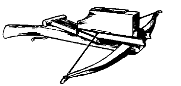

武器说明
上表列出许多名称或用途特殊的武器。以下说明旨在解释这些武器的外观与用途；某些武器的特殊用途和特性（例如缠绕）也会在相应条目中说明。
箭（Arrows）：箭有多种形状和样式。最常见的是普通楔形箭头。破甲箭采用狭窄的尖刺箭头，专为穿透不同类型的护甲而设计。蛙叉箭头呈 V 形，内缘锋利，可割断旗帜、护甲系带，并使夹在叉口中的目标受到严重创伤。要成功用它切割，角色必须成功命中特定部位。鸣哨箭装有雕刻木制箭头，射出时会发出响亮哨声，最远可在一英里外听见，通常用于传讯。鸣哨箭也可绑上浸油布或稻草制成火箭；命中及火焰造成 1–3 点伤害，并会点燃易燃物，除非迅速扑灭。叶头箭装有宽阔箭头，旨在造成更严重的创伤；箭头常雕刻或穿孔装饰，本身也可成为艺术品。
bo 棍：bo 棍是硬木制成的木杖，通常长 6–7 英尺。木质坚硬，不易被砍断或折断。
木刀（Boku-toh）：这是武士刀的木制复制品，常用于练习剑术，因为不会造成切割伤。若以猛烈方式挥舞，仍可能凭冲击力造成伤害。
链（Chain）：又称 manriki-gusari 或 rante，是一段两端各带重物的简单链条。可快速挥舞，以重物造成猛烈打击；也可甩出一端缠住对手，或像流星锤般投出，同时缠绕并造成伤害。领主禁止携带或佩戴其他武器的地区，以及需要隐蔽时，常会使用链这种武器。
矛链（Chijiriki）：这是普通长矛，尾端另接一段加重链。可像普通长矛一样使用，也可甩出尾端缠住对手。
筷子（Chopsticks）：紧急情况下可把筷子当作武器。效果并不好，但总比没有武器强。

诸葛连弩（Chu-ko-nu）：这是一种可连续发射数支弩矢、之后才需重新装填的轻型连弩。顶部弹匣最多容纳 10 支弩矢；装填机构由一根单手推拉的杠杆操作，因此射速比普通弩快。每轮最多可向弹匣装入两支弩矢，装满需要五轮。角色不能在同一轮中既射击又装填。它比普通弩重，射程也较差。
大弓（Daikyu）：这是《东方冒险》规则中最大的弓，某些方面类似长弓。弓长七英尺，弓端弯曲以增强威力。与大多数弓不同，它的握把不在中央，而是靠近下端，因此可在马背上或跪姿射击。
钩棒（Fang）：fang 是一种重型铁制武器，仿照象钩制作，长度约与短剑相当。尖端下方有一个沉重的钩刺。